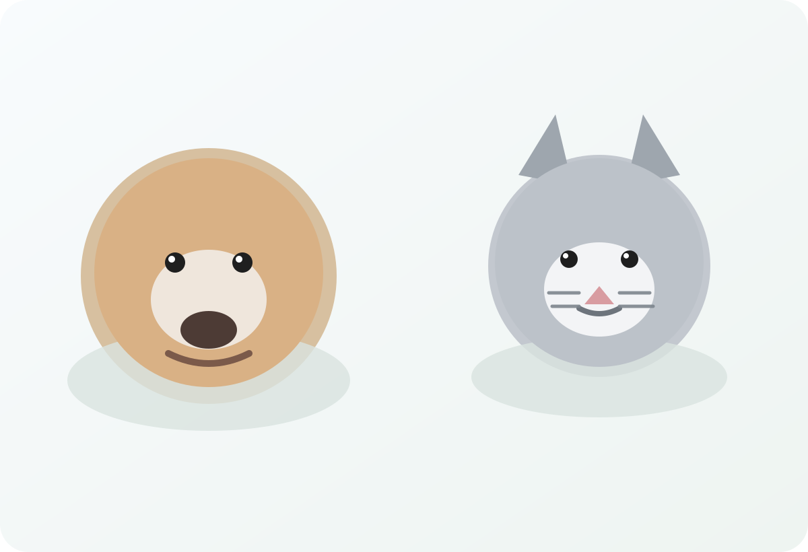

כלבים וחתולים אבודים נמשכים לעיתים למקומות עם צל, מים או שקט יחסי. התחילו שם.

מחזירים אותם הביתה. ביחד.
טכנולוגיית זיהוי לפי תמונה, דיווח מהיר וקהילה תומכת שעוזרת להגיע במהירות לאנשים הנכונים בדרך חזרה הביתה.
0 חיות חזרו הביתה
0 דיווחים פעילים
54 חברים חזרו הביתה השבוע
חיפוש מהיר
חפשו לפי צבע, עיר או גזע
נסו למשל: כלב לבן בתל אביב, חתולה ג׳ינג׳ית בחולון, לברדור בראשון לציון.
עזרה ראשונה לחיפוש
מה כדאי לעשות כבר עכשיו?
לפני הכול — נשמו עמוק, פעלו מהר ושמרו על סדר. הפעולות הקטנות האלו עושות הבדל גדול.
תמונה אחת טובה, אזור אחרון שנראה בו וטלפון זמין יעלו משמעותית את הסיכוי לעזרה מהירה.
בחרו אדם אחד שמרכז את השיחות והעדכונים, ושמרו לעצמכם רשימה קצרה של מקומות שכבר נבדקו.
פחות בלגן, יותר סיכוי להגיע לקצה חוטדיווחים מהקהילה
דיווחים אחרונים מהשטח
ראיתם אחד מהם? לחצו לפרטים, שתפו במהירות ועזרו להגיע לאנשים הנכונים.
איך זה עובד?
שלושה צעדים פשוטים בדרך הביתה
כשהלב בלחץ, חשוב שהדרך תהיה ברורה וקלה.
1
מצלמים ומעלים
מעלים תמונה ופרטים שיעזרו לנו לזהות את בעל החיים במהירות.
2
הקהילה נרתמת
המודעה נחשפת לאנשים באזור שלכם, עם כלים לשיתוף ודיווח מהיר.
3
מתאחדים
ברגע שיש קצה חוט, אפשר לפנות מיד ולקרב את רגע המפגש מחדש.